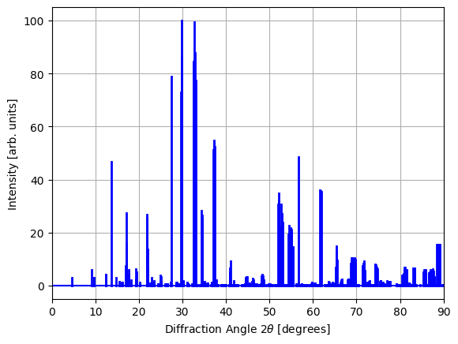
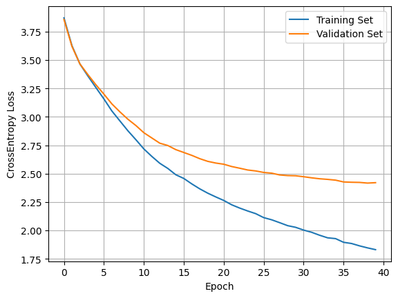
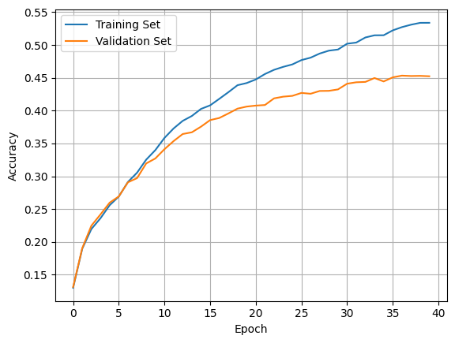

XRD Modeling#
import pandas as pd
raise
---------------------------------------------------------------------------
RuntimeError Traceback (most recent call last)
Cell In[2], line 1
----> 1 raise
RuntimeError: No active exception to reraise
xrd_df = pd.read_csv('xrd_dataset_full.csv')
display(xrd_df)
| mp_id | formula | composition | crystal_system | symmetry_symbol | cell_params | energy_above_hull | xray_peaks | xray_intensities | |
|---|---|---|---|---|---|---|---|---|---|
| 0 | mp-676840 | Ag13(PbO3)6 | {'Ag': 26, 'Pb': 12, 'O': 36} | triclinic | P1 | (6.002268, 10.397799745616618, 19.466327337319... | 0.007080 | [4.539,8.504,9.086,9.625,9.662,12.428,12.486,1... | [2.848,0.094,6.001,3.006,2.908,4.037,4.086,46.... |
| 1 | mp-685283 | Ag13Bi15I64 | {'Ag': 13, 'Bi': 15, 'I': 64} | triclinic | P1 | (8.894472385608267, 9.034189542918936, 59.5692... | 0.083551 | [1.485,2.970,4.455,5.941,7.429,8.917,10.407,11... | [100.000,0.282,0.843,0.044,0.360,0.059,2.260,0... |
| 2 | mp-1229151 | Ag15S5I4Br | {'Ag': 15, 'S': 5, 'I': 4, 'Br': 1} | triclinic | P1 | (6.993913570662637, 8.558995140558554, 10.9872... | 0.065281 | [8.805,10.757,11.873,13.371,13.441,15.703,16.3... | [0.410,0.293,0.217,0.223,0.179,0.159,0.162,0.1... |
| 3 | mp-759792 | Ag2B8O13 | {'Ag': 8, 'B': 32, 'O': 52} | triclinic | P1 | (7.898226, 10.663953129513134, 12.038956354262... | 0.011548 | [7.451,8.414,10.253,11.203,12.162,13.467,13.46... | [2.472,0.055,0.002,0.459,0.076,33.647,27.434,8... |
| 4 | mp-686742 | Ag2H21N7(ClO4)2 | {'Ag': 2, 'H': 21, 'N': 7, 'Cl': 2, 'O': 8} | triclinic | P1 | (8.185132, 8.714175033958062, 9.08744340539081... | 0.700030 | [10.854,10.961,11.426,11.674,14.809,15.183,15.... | [8.524,100.000,65.581,91.596,2.314,4.840,1.231... |
| ... | ... | ... | ... | ... | ... | ... | ... | ... | ... |
| 91140 | mp-1364038 | Zn3Si3(SnO6)2 | {'Zn': 24, 'Si': 24, 'Sn': 16, 'O': 96} | cubic | Ia-3d | (12.35908, 12.35908, 12.35908, 90.0, 90.0, 90.0) | 0.308748 | [17.577,20.324,26.994,28.897,32.396,34.024,35.... | [5.740,45.839,4.501,67.368,55.614,0.429,100.00... |
| 91141 | mp-1163950 | Zn3Si3(WO6)2 | {'Zn': 24, 'Si': 24, 'W': 16, 'O': 96} | cubic | Ia-3d | (12.137336, 12.137336, 12.137336, 90.0, 90.0, ... | 0.226553 | [17.901,20.699,27.497,29.436,33.005,34.665,36.... | [3.294,74.831,2.346,56.137,25.406,0.374,100.00... |
| 91142 | mp-1327509 | Zn3Sn2(GeO4)3 | {'Zn': 24, 'Sn': 16, 'Ge': 24, 'O': 96} | cubic | Ia-3d | (12.573034, 12.573034, 12.573034, 90.0, 90.0, ... | 0.227320 | [17.276,19.974,26.526,28.395,31.830,33.428,34.... | [0.201,16.587,0.840,64.249,87.208,4.704,100.00... |
| 91143 | mp-648774 | Zr2Cl5 | {'Zr': 96, 'Cl': 240} | cubic | Ia-3d | (21.790819064017104, 21.790819064017104, 21.79... | 0.059570 | [9.943,11.486,15.213,16.271,18.207,19.104,19.9... | [0.626,100.000,6.746,1.780,0.009,2.667,4.761,0... |
| 91144 | mp-531184 | Zr6NCl15 | {'Zr': 96, 'N': 16, 'Cl': 240} | cubic | Ia-3d | (21.44328662, 21.44328662, 21.44328662, 90.0, ... | 0.000000 | [10.104,11.673,15.462,16.536,18.504,19.416,20.... | [0.389,100.000,5.158,0.569,0.025,1.852,1.828,0... |
91145 rows × 9 columns
import ast # <- parses Python literals from text
# Generate a list of elements in the dataset:
ELEMENTS = set()
for v in xrd_df['composition'].values:
ELEMENTS |= set(ast.literal_eval(v).keys())
ELEMENTS = sorted(ELEMENTS)
# Generate a list of the crystal systems in the dataset:
CRYSTAL_SYSTEMS = sorted(set(xrd_df['crystal_system']))
SYMM_SYMBOLS = sorted(set(xrd_df['symmetry_symbol']))
# print the sizes of ELEMENTS and CRYSTAL_SYSTEMS
print('Number of elements:', len(ELEMENTS))
print('Number of symmetry symbols:', len(SYMM_SYMBOLS))
print('Number of crystal systems:', len(CRYSTAL_SYSTEMS))
Number of elements: 88
Number of symmetry symbols: 228
Number of crystal systems: 7
print(SYMM_SYMBOLS)
['Aea2', 'Aem2', 'Ama2', 'Amm2', 'C2', 'C2/c', 'C2/m', 'C222', 'C222_1', 'Cc', 'Ccc2', 'Ccce', 'Cccm', 'Cm', 'Cmc2_1', 'Cmce', 'Cmcm', 'Cmm2', 'Cmme', 'Cmmm', 'F-43c', 'F-43m', 'F222', 'F23', 'F432', 'F4_132', 'Fd-3', 'Fd-3c', 'Fd-3m', 'Fdd2', 'Fddd', 'Fm-3', 'Fm-3c', 'Fm-3m', 'Fmm2', 'Fmmm', 'I-4', 'I-42d', 'I-42m', 'I-43d', 'I-43m', 'I-4c2', 'I-4m2', 'I222', 'I23', 'I2_12_12_1', 'I2_13', 'I4', 'I4/m', 'I4/mcm', 'I4/mmm', 'I422', 'I432', 'I4_1', 'I4_1/a', 'I4_1/acd', 'I4_1/amd', 'I4_122', 'I4_132', 'I4_1cd', 'I4_1md', 'I4cm', 'I4mm', 'Ia-3', 'Ia-3d', 'Iba2', 'Ibam', 'Ibca', 'Im-3', 'Im-3m', 'Ima2', 'Imm2', 'Imma', 'Immm', 'P-1', 'P-3', 'P-31c', 'P-31m', 'P-3c1', 'P-3m1', 'P-4', 'P-42_1c', 'P-42_1m', 'P-42c', 'P-42m', 'P-43m', 'P-43n', 'P-4b2', 'P-4c2', 'P-4m2', 'P-4n2', 'P-6', 'P-62c', 'P-62m', 'P-6c2', 'P-6m2', 'P1', 'P2', 'P2/c', 'P2/m', 'P222', 'P222_1', 'P23', 'P2_1', 'P2_1/c', 'P2_1/m', 'P2_12_12', 'P2_12_12_1', 'P2_13', 'P3', 'P312', 'P31c', 'P31m', 'P321', 'P3_1', 'P3_112', 'P3_121', 'P3_2', 'P3_212', 'P3_221', 'P3c1', 'P3m1', 'P4', 'P4/m', 'P4/mbm', 'P4/mcc', 'P4/mmm', 'P4/mnc', 'P4/n', 'P4/nbm', 'P4/ncc', 'P4/nmm', 'P4/nnc', 'P422', 'P42_12', 'P4_1', 'P4_122', 'P4_12_12', 'P4_132', 'P4_2', 'P4_2/m', 'P4_2/mbc', 'P4_2/mcm', 'P4_2/mmc', 'P4_2/mnm', 'P4_2/n', 'P4_2/nbc', 'P4_2/ncm', 'P4_2/nmc', 'P4_2/nnm', 'P4_222', 'P4_22_12', 'P4_232', 'P4_2bc', 'P4_2cm', 'P4_2mc', 'P4_2nm', 'P4_3', 'P4_322', 'P4_32_12', 'P4_332', 'P4bm', 'P4cc', 'P4mm', 'P4nc', 'P6/m', 'P6/mcc', 'P6/mmm', 'P622', 'P6_1', 'P6_122', 'P6_2', 'P6_222', 'P6_3', 'P6_3/m', 'P6_3/mcm', 'P6_3/mmc', 'P6_322', 'P6_3cm', 'P6_3mc', 'P6_4', 'P6_422', 'P6_5', 'P6_522', 'P6cc', 'P6mm', 'Pa-3', 'Pba2', 'Pbam', 'Pban', 'Pbca', 'Pbcm', 'Pbcn', 'Pc', 'Pca2_1', 'Pcc2', 'Pcca', 'Pccm', 'Pccn', 'Pm', 'Pm-3', 'Pm-3m', 'Pm-3n', 'Pma2', 'Pmc2_1', 'Pmm2', 'Pmma', 'Pmmm', 'Pmmn', 'Pmn2_1', 'Pmna', 'Pn-3', 'Pn-3m', 'Pn-3n', 'Pna2_1', 'Pnc2', 'Pnma', 'Pnn2', 'Pnna', 'Pnnm', 'Pnnn', 'R-3', 'R-3c', 'R-3m', 'R3', 'R32', 'R3c', 'R3m']
# Generate a map from each symmetry symbol to
# the corresponding crystal system
SYMM_SYMBOL_MAP = {}
for _, row in xrd_df.iterrows():
system = row['crystal_system']
symm = row['symmetry_symbol']
SYMM_SYMBOL_MAP[symm] = system
import matplotlib.pyplot as plt
def parse_xrd_data(row):
peaks = ast.literal_eval(row['xray_peaks'])
ints = ast.literal_eval(row['xray_intensities'])
return peaks, ints
def plot_xrd(peaks, intensities):
plt.figure()
for x, y in zip(peaks, intensities):
plt.plot([x,x], [0, y], color='b', linewidth=2)
plt.axhline(color='b')
plt.xlim((0,90))
plt.grid()
plt.ylabel('Intensity [arb. units]')
plt.xlabel(r'Diffraction Angle $2\theta$ [degrees]')
plt.show()
plot_xrd(*parse_xrd_data(xrd_df.iloc[0]))

import numpy as np
def vectorize_composition(composition, elements):
""" converts an elemental composition dict to a vector. """
total_n = sum(composition.values())
vec = np.zeros(len(elements))
for elem, n in composition.items():
if elem in elements:
vec[elements.index(elem)] = n/total_n
return vec
def vectorize_crystal_system(crystal_system, systems):
""" converts a crystal system to a vector. """
vec = np.zeros(len(systems))
if crystal_system in systems:
vec[systems.index(crystal_system)] = 1.0
return vec
def vectorize_symmetry(symmetry_symbol, symbols):
""" converts a symmetry symbol to a vector. """
vec = np.zeros(len(symbols))
if symmetry_symbol in symbols:
vec[symbols.index(symmetry_symbol)] = 1.0
return vec
def vectorize_xrd_spectrum(peaks, intensities, intensity_scale=100, bins=90):
hist, _ = np.histogram(
peaks, bins=bins,
range=(0, 90),
weights=intensities)
return hist / intensity_scale
def parse_data_vector(row):
""" parses x and y vectors from a dataframe row """
# parse the xray peaks and intensities
peaks, ints = parse_xrd_data(row)
# parse feature vector (x):
x_vector = vectorize_xrd_spectrum(peaks, ints)
# parse label vector (y):
y_vector = vectorize_symmetry(row['symmetry_symbol'], symbols=SYMM_SYMBOLS)
#y_vector = vectorize_crystal_system(row['crystal_system'], systems=CRYSTAL_SYSTEMS)
return x_vector, y_vector
from torch.utils.data import Dataset
from tqdm import tqdm
# Define a custom dataset class
class XRDDataset(Dataset):
def __init__(self, xrd_df):
data_x = []
data_y = []
# parse data from datafrane
for _, row in tqdm(xrd_df.iterrows(), total=len(xrd_df)):
x, y = parse_data_vector(row)
data_x.append(x)
data_y.append(y)
np_data_x = np.array(data_x)
np_data_y = np.array(data_y)
# convert data to pytorch tensors
self.data_x = torch.tensor(np_data_x, dtype=torch.float32)
self.data_y = torch.tensor(np_data_y, dtype=torch.float32)
def __len__(self):
""" returns the size of this dataset"""
return len(self.data_x)
def __getitem__(self, idx):
""" Gets the (x,y) pair at index 'idx' """
x = self.data_x[idx]
y = self.data_y[idx]
return x, y
import torch
import torch.nn as nn
# Define the neural network class (XRDNet)
class XRDNet(nn.Module):
def __init__(self, input_size, hidden_layer_sizes, output_size):
""" Constructs a feed-forward neural network with many hidden layers"""
super().__init__()
layer_sizes = [input_size]
layer_sizes.extend(hidden_layer_sizes)
layer_sizes.append(output_size)
self.hidden_layers = nn.ParameterList([
nn.Linear(size_in, size_out)
for size_in, size_out in
zip(layer_sizes[:-1], layer_sizes[1:])
])
# define hidden layer activation function:
self.activation = nn.SiLU()
self.out_activation = nn.Softmax(dim=-1)
def forward(self, x):
""" Estimates the relative log-likelihood (logit) of each output feature"""
for layer in self.hidden_layers[:-1]:
x = self.activation(layer(x))
out = self.hidden_layers[-1](x)
return out
def classify(self, x):
""" Estimates the normalized output probability of each output feature"""
out = self(x)
return self.out_activation(out)
from torch.utils.data import DataLoader
import torch.nn as nn
import torch.optim as optim
def eval_model_loss(model, data_loader, loss_fn):
loss = []
with torch.no_grad():
for z_batch, y_batch in data_loader:
loss.append(loss_fn(model(z_batch), y_batch))
mean_loss = torch.stack(loss).mean().item()
return mean_loss
def eval_model_accuracy(model, data_loader):
acc = []
with torch.no_grad():
for z_batch, y_batch in data_loader:
pred_class = model(z_batch).argmax(dim=-1)
true_class = y_batch.argmax(dim=-1)
acc.append((pred_class == true_class).to(torch.float32).mean())
mean_acc = torch.stack(acc).mean().item()
return mean_acc
from torch.utils.data import random_split
dataset = XRDDataset(xrd_df)
train_dataset, val_dataset, test_dataset = random_split(dataset, [0.8, 0.1, 0.1])
100%|████████████████████████████████████████████████| 91145/91145 [01:22<00:00, 1108.57it/s]
model = XRDNet(
input_size=len(dataset[0][0]),
hidden_layer_sizes= [512, 256, 128],
output_size=len(dataset[0][1]),
)
def fit_model(model, train_dataset, val_dataset, n_epochs=100, batch_size=64, lr=1e-3, wd=1e-3):
train_loader = DataLoader(train_dataset, batch_size=batch_size, shuffle=True)
val_loader = DataLoader(val_dataset, batch_size=batch_size, shuffle=False)
optimizer = optim.AdamW(model.parameters(), lr=lr, weight_decay=wd)
loss_fn = nn.CrossEntropyLoss()
# create a dict to record losses during training
history = {
'train_loss': [],
'val_loss': [],
'train_acc': [],
'val_acc': []
}
# main training loop (fixed number of epochs)
for epoch in range(n_epochs):
# apply stochastic gradient descent step to each batch in dataset
print(f'Epoch {epoch}')
epoch_losses = []
for z_batch, y_batch in tqdm(train_loader):
# zero optimizer gradients
optimizer.zero_grad()
# generate batch prediction
y_hat_batch = model(z_batch)
# compute loss
loss = loss_fn(y_hat_batch, y_batch)
epoch_losses.append(loss.item())
# backpropagate loss
loss.backward()
optimizer.step()
# evaluate epoch training and validation losses:
train_loss = eval_model_loss(model, train_loader, loss_fn)
val_loss = eval_model_loss(model, val_loader, loss_fn)
# evaluate epoch accuracies:
train_acc = eval_model_accuracy(model, train_loader)
val_acc = eval_model_accuracy(model, val_loader)
print(f'Train loss: {train_loss}; Val loss: {val_loss}')
print(f'Train acc: {train_acc}; Val acc: {val_acc}')
# record losses in history dictionary
history['train_loss'].append(train_loss)
history['train_acc'].append(train_acc)
history['val_loss'].append(val_loss)
history['val_acc'].append(val_acc)
return history
history = fit_model(
model,
train_dataset,
val_dataset,
batch_size=512,
n_epochs=40,
lr=1e-3,
wd=1e-1
)
Epoch 0
100%|██████████████████████████████████████████████████████| 143/143 [00:01<00:00, 74.75it/s]
Train loss: 3.8711278438568115; Val loss: 3.857065439224243
Train acc: 0.13011497259140015; Val acc: 0.13125793635845184
Epoch 1
100%|██████████████████████████████████████████████████████| 143/143 [00:01<00:00, 80.71it/s]
Train loss: 3.626443386077881; Val loss: 3.6202774047851562
Train acc: 0.18965452909469604; Val acc: 0.19049955904483795
Epoch 2
100%|██████████████████████████████████████████████████████| 143/143 [00:01<00:00, 73.54it/s]
Train loss: 3.4649927616119385; Val loss: 3.465507984161377
Train acc: 0.21962642669677734; Val acc: 0.2247316539287567
Epoch 3
100%|██████████████████████████████████████████████████████| 143/143 [00:02<00:00, 65.86it/s]
Train loss: 3.359253406524658; Val loss: 3.37131404876709
Train acc: 0.23609822988510132; Val acc: 0.24190166592597961
Epoch 4
100%|██████████████████████████████████████████████████████| 143/143 [00:02<00:00, 70.17it/s]
Train loss: 3.257671594619751; Val loss: 3.282165050506592
Train acc: 0.255881130695343; Val acc: 0.25977623462677
Epoch 5
100%|██████████████████████████████████████████████████████| 143/143 [00:02<00:00, 65.48it/s]
Train loss: 3.157689332962036; Val loss: 3.1998326778411865
Train acc: 0.2690723240375519; Val acc: 0.2692708373069763
Epoch 6
100%|██████████████████████████████████████████████████████| 143/143 [00:01<00:00, 81.30it/s]
Train loss: 3.0513858795166016; Val loss: 3.113863945007324
Train acc: 0.2913055419921875; Val acc: 0.29075416922569275
Epoch 7
100%|██████████████████████████████████████████████████████| 143/143 [00:01<00:00, 71.80it/s]
Train loss: 2.964308738708496; Val loss: 3.0441360473632812
Train acc: 0.30543625354766846; Val acc: 0.29715606570243835
Epoch 8
100%|██████████████████████████████████████████████████████| 143/143 [00:02<00:00, 71.42it/s]
Train loss: 2.877728223800659; Val loss: 2.979323387145996
Train acc: 0.3252936899662018; Val acc: 0.31953442096710205
Epoch 9
100%|██████████████████████████████████████████████████████| 143/143 [00:01<00:00, 82.14it/s]
Train loss: 2.799126625061035; Val loss: 2.9238481521606445
Train acc: 0.3398224115371704; Val acc: 0.32710185647010803
Epoch 10
100%|██████████████████████████████████████████████████████| 143/143 [00:01<00:00, 80.05it/s]
Train loss: 2.7175979614257812; Val loss: 2.860295295715332
Train acc: 0.35842958092689514; Val acc: 0.3412337005138397
Epoch 11
100%|██████████████████████████████████████████████████████| 143/143 [00:01<00:00, 79.18it/s]
Train loss: 2.6516871452331543; Val loss: 2.814103126525879
Train acc: 0.37285399436950684; Val acc: 0.3535749018192291
Epoch 12
100%|██████████████████████████████████████████████████████| 143/143 [00:01<00:00, 74.53it/s]
Train loss: 2.5910017490386963; Val loss: 2.7679877281188965
Train acc: 0.38442540168762207; Val acc: 0.36437055468559265
Epoch 13
100%|██████████████████████████████████████████████████████| 143/143 [00:02<00:00, 68.10it/s]
Train loss: 2.5459635257720947; Val loss: 2.7476961612701416
Train acc: 0.3918832838535309; Val acc: 0.3670022487640381
Epoch 14
100%|██████████████████████████████████████████████████████| 143/143 [00:01<00:00, 80.13it/s]
Train loss: 2.490429162979126; Val loss: 2.7115705013275146
Train acc: 0.4026210308074951; Val acc: 0.3755732476711273
Epoch 15
100%|██████████████████████████████████████████████████████| 143/143 [00:01<00:00, 80.73it/s]
Train loss: 2.4578611850738525; Val loss: 2.6863789558410645
Train acc: 0.4080485999584198; Val acc: 0.3855828642845154
Epoch 16
100%|██████████████████████████████████████████████████████| 143/143 [00:01<00:00, 75.89it/s]
Train loss: 2.4099197387695312; Val loss: 2.661085844039917
Train acc: 0.4179486930370331; Val acc: 0.3887835741043091
Epoch 17
100%|██████████████████████████████████████████████████████| 143/143 [00:01<00:00, 80.87it/s]
Train loss: 2.3662261962890625; Val loss: 2.6318113803863525
Train acc: 0.42810487747192383; Val acc: 0.39572852849960327
Epoch 18
100%|██████████████████████████████████████████████████████| 143/143 [00:01<00:00, 88.12it/s]
Train loss: 2.328207015991211; Val loss: 2.6083593368530273
Train acc: 0.4387671947479248; Val acc: 0.40305089950561523
Epoch 19
100%|██████████████████████████████████████████████████████| 143/143 [00:01<00:00, 72.79it/s]
Train loss: 2.2953529357910156; Val loss: 2.5933828353881836
Train acc: 0.4420362710952759; Val acc: 0.40617114305496216
Epoch 20
100%|██████████████████████████████████████████████████████| 143/143 [00:01<00:00, 79.25it/s]
Train loss: 2.264331102371216; Val loss: 2.5830776691436768
Train acc: 0.4474940299987793; Val acc: 0.4076896905899048
Epoch 21
100%|██████████████████████████████████████████████████████| 143/143 [00:01<00:00, 76.87it/s]
Train loss: 2.225775957107544; Val loss: 2.5627241134643555
Train acc: 0.4557792842388153; Val acc: 0.4085572361946106
Epoch 22
100%|██████████████████████████████████████████████████████| 143/143 [00:01<00:00, 78.89it/s]
Train loss: 2.197003126144409; Val loss: 2.5478932857513428
Train acc: 0.46219897270202637; Val acc: 0.41870343685150146
Epoch 23
100%|██████████████████████████████████████████████████████| 143/143 [00:01<00:00, 78.94it/s]
Train loss: 2.17148494720459; Val loss: 2.5321755409240723
Train acc: 0.46670377254486084; Val acc: 0.42127901315689087
Epoch 24
100%|██████████████████████████████████████████████████████| 143/143 [00:01<00:00, 75.31it/s]
Train loss: 2.148090124130249; Val loss: 2.52388072013855
Train acc: 0.4704190790653229; Val acc: 0.4225006401538849
Epoch 25
100%|██████████████████████████████████████████████████████| 143/143 [00:01<00:00, 85.70it/s]
Train loss: 2.1131138801574707; Val loss: 2.5106821060180664
Train acc: 0.4770370125770569; Val acc: 0.42700234055519104
Epoch 26
100%|██████████████████████████████████████████████████████| 143/143 [00:01<00:00, 87.60it/s]
Train loss: 2.0939455032348633; Val loss: 2.5043649673461914
Train acc: 0.48071759939193726; Val acc: 0.4257293939590454
Epoch 27
100%|██████████████████████████████████████████████████████| 143/143 [00:01<00:00, 84.87it/s]
Train loss: 2.0686051845550537; Val loss: 2.488741397857666
Train acc: 0.4870195686817169; Val acc: 0.4299876093864441
Epoch 28
100%|██████████████████████████████████████████████████████| 143/143 [00:01<00:00, 81.20it/s]
Train loss: 2.0423531532287598; Val loss: 2.483219623565674
Train acc: 0.49140071868896484; Val acc: 0.43017762899398804
Epoch 29
100%|██████████████████████████████████████████████████████| 143/143 [00:01<00:00, 78.07it/s]
Train loss: 2.0277204513549805; Val loss: 2.4815213680267334
Train acc: 0.4931377172470093; Val acc: 0.43234723806381226
Epoch 30
100%|██████████████████████████████████████████████████████| 143/143 [00:01<00:00, 78.54it/s]
Train loss: 2.0033090114593506; Val loss: 2.473109245300293
Train acc: 0.5019887089729309; Val acc: 0.44102779030799866
Epoch 31
100%|██████████████████████████████████████████████████████| 143/143 [00:01<00:00, 79.06it/s]
Train loss: 1.9839979410171509; Val loss: 2.4633045196533203
Train acc: 0.5037290453910828; Val acc: 0.4432249367237091
Epoch 32
100%|██████████████████████████████████████████████████████| 143/143 [00:02<00:00, 69.34it/s]
Train loss: 1.9579802751541138; Val loss: 2.4550395011901855
Train acc: 0.5114956498146057; Val acc: 0.4437669515609741
Epoch 33
100%|██████████████████████████████████████████████████████| 143/143 [00:01<00:00, 88.65it/s]
Train loss: 1.9353046417236328; Val loss: 2.4497060775756836
Train acc: 0.5148025155067444; Val acc: 0.44970783591270447
Epoch 34
100%|██████████████████████████████████████████████████████| 143/143 [00:01<00:00, 85.53it/s]
Train loss: 1.9282563924789429; Val loss: 2.442826509475708
Train acc: 0.5148904323577881; Val acc: 0.4444725215435028
Epoch 35
100%|██████████████████████████████████████████████████████| 143/143 [00:02<00:00, 68.35it/s]
Train loss: 1.8958359956741333; Val loss: 2.4270384311676025
Train acc: 0.5223426222801208; Val acc: 0.4507383704185486
Epoch 36
100%|██████████████████████████████████████████████████████| 143/143 [00:01<00:00, 77.34it/s]
Train loss: 1.8852308988571167; Val loss: 2.4243669509887695
Train acc: 0.5272566676139832; Val acc: 0.4533706307411194
Epoch 37
100%|██████████████████████████████████████████████████████| 143/143 [00:01<00:00, 75.21it/s]
Train loss: 1.8644616603851318; Val loss: 2.422976016998291
Train acc: 0.5309664607048035; Val acc: 0.45277297496795654
Epoch 38
100%|██████████████████████████████████████████████████████| 143/143 [00:02<00:00, 69.85it/s]
Train loss: 1.8467696905136108; Val loss: 2.4170145988464355
Train acc: 0.5337986946105957; Val acc: 0.45298945903778076
Epoch 39
100%|██████████████████████████████████████████████████████| 143/143 [00:01<00:00, 74.35it/s]
Train loss: 1.8310538530349731; Val loss: 2.420649528503418
Train acc: 0.5338420867919922; Val acc: 0.4523935317993164
plt.figure()
plt.plot(history['train_loss'], label='Training Set')
plt.plot(history['val_loss'], label='Validation Set')
plt.ylabel('CrossEntropy Loss')
plt.xlabel('Epoch')
plt.grid()
plt.legend()
plt.show()

plt.figure()
plt.plot(history['train_acc'], label='Training Set')
plt.plot(history['val_acc'], label='Validation Set')
plt.ylabel('Accuracy')
plt.xlabel('Epoch')
plt.grid()
plt.legend()
plt.show()

train_acc = eval_model_accuracy(model, train_dataset)
val_acc = eval_model_accuracy(model, val_dataset)
test_acc = eval_model_accuracy(model, test_dataset)
print(f'Train Accuracy: {train_acc:.6f}')
print(f'Validation Accuracy: {val_acc:.6f}')
print(f'Test Accuracy: {test_acc:.6f}')
Train Accuracy: 0.534087
Validation Accuracy: 0.452052
Test Accuracy: 0.458964
import torch
import torch.nn as nn
class XRDTransformer(nn.Module):
def __init__(self, input_size, model_dim, output_size, n_layers=2, n_heads=4):
""" Constructs a feed-forward neural network with many hidden layers"""
super().__init__()
self.model_dim = model_dim
self.pos_embedding = nn.Embedding(input_size, model_dim)
self.input_proj = nn.Linear(1, model_dim)
encoder_layer = nn.TransformerEncoderLayer(
d_model=model_dim,
nhead=n_heads,
dim_feedforward=4*model_dim,
batch_first=True
)
self.transformer_encoder = nn.TransformerEncoder(
encoder_layer,
num_layers=n_layers,
)
self.out_activation = nn.Softmax(dim=-1)
self.output_proj = nn.Linear(model_dim, output_size)
def forward(self, x):
""" Estimates the relative log-likelihood (logit) of each output feature"""
batch_size = 1 if x.ndim == 1 else x.shape[-2]
input_size = x.shape[-1]
ids = torch.arange(input_size, device=x.device)
pos_ids = ids.unsqueeze(0).expand(batch_size, input_size)
pos_embed = self.pos_embedding(pos_ids)
x = self.input_proj(x.unsqueeze(-1)) + pos_embed
x = self.transformer_encoder(x)
output_element = x[...,0,:]
out = self.output_proj(output_element)
if out.shape[-2] == 1:
out = out.reshape(-1)
return out
def classify(self, x):
""" Estimates the normalized output probability of each output feature"""
out = self(x)
return self.out_activation(out)
transformer = XRDTransformer(
input_size=len(dataset[0][0]),
model_dim=4,
n_heads=2,
n_layers=1,
output_size=len(dataset[0][1]),
)
history = fit_model(
transformer,
train_dataset,
val_dataset,
batch_size=512,
n_epochs=40,
lr=1e-3,
wd=1e-2
)